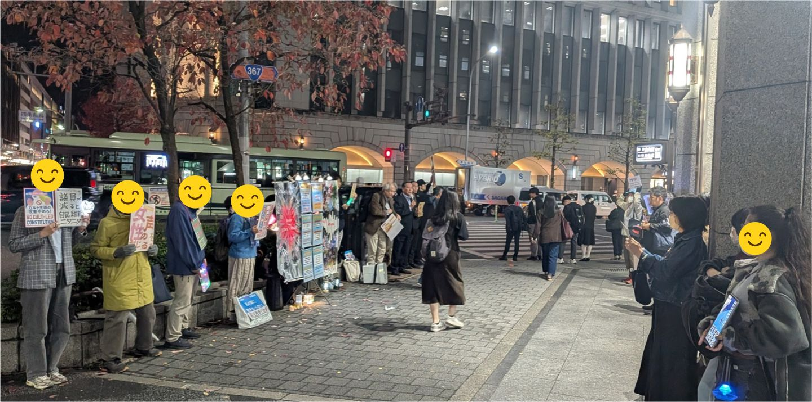
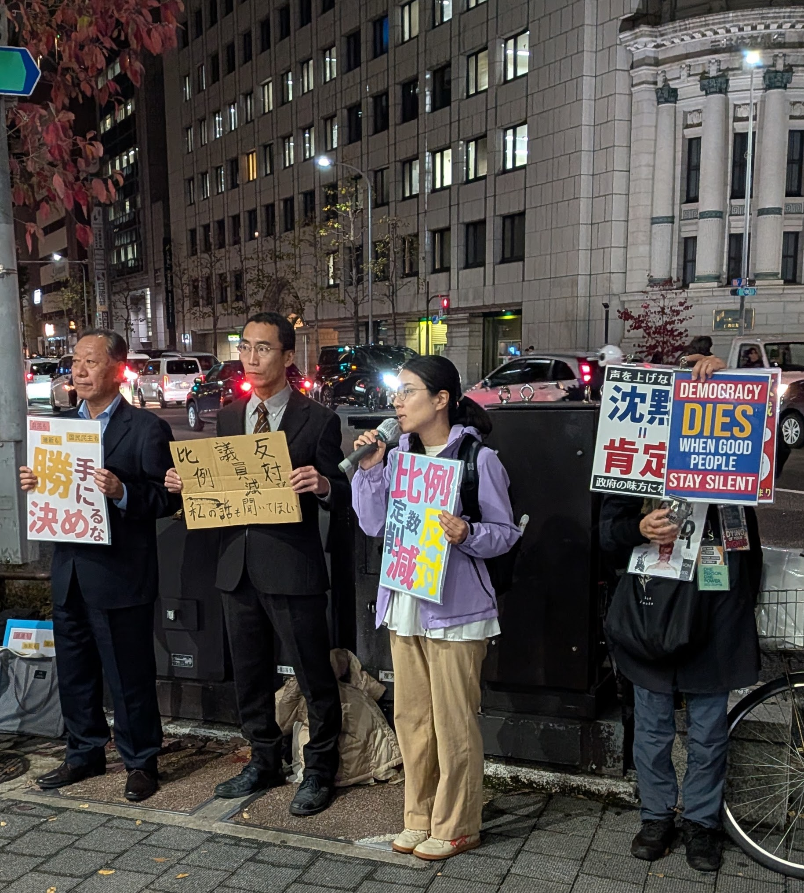
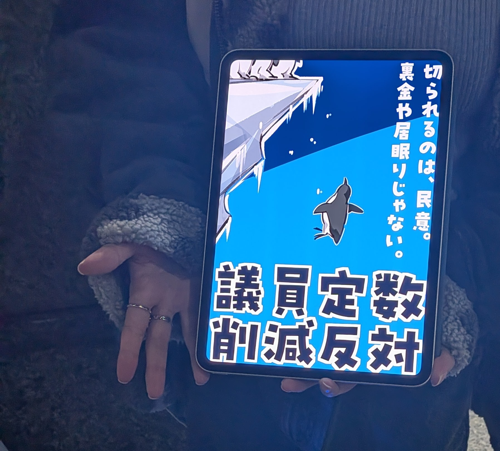

京都の大学人有志
アピール声明 2026年11月3日｜スタンディングは11月18日に開催しました
手づくりのプラカードを持った人などが、デモカレンダーを見て集まってくれました。参加してくださったみなさん、賛同を寄せてくださったみなさん、ありがとうございました。
呼びかけ人からは、小松浩さん（立命館大学特任教授）、丸山啓史さん（京都教育大学教授）、前田耕治さん（京都工芸繊維大学名誉教授）が参加し、司会と進行は細川孝（龍谷大学）が行いました。
1時間近くにわたって、マイクを使っての宣伝を行いました。マイクを向けると、「比例削減は民主主義を破壊する」と、次々と参加者がマイクを持って訴えてくれました。



選挙制度は民主主義の根幹です。しかし、わたしたちの「民意を切り捨てる」ような制度への改悪が進められようとしています。
衆議院の議員定数について、比例代表で31議席を削減する案が、自民党、日本維新の会、国民民主党の３党で合意されたと報道されました。もともと自民党と日本維新の会の政権合意で「定数の１割削減」を明記したところから始まり、ここにきて、国民民主党が賛成に転じたものです。
衆議院は1994年の選挙制度改革によって、中選挙区制が廃止され、小選挙区300議席と比例代表200議席の「小選挙区比例代表並立制」に移行しました（議席数は511から500に削減）。その後、定数削減が続き、現在は小選挙区289、比例代表176、合計465議席となっています。
小選挙区制によって一つの政党が得票率を大きく上回る議席数を得ることになる、小選挙区制によって多様な民意が反映されないといった問題が当初から指摘されてきました。また、人口当たりの議員数が国際的に見て少ないこともあります。議員定数の削減は、議員の「身を切る改革」ではなく、主権者国民の声を切ることです。今回の「合意」によって、日本の民主主義は、いっそう深刻な状況に陥ってしまいます。
わたしたちの生活や研究・教育という営みは民主主義という基盤によって支えられています。今回の「衆議院の比例代表31議席削減」はその基盤を掘り崩すものと言えます。決して許されるものではないと考えます。
比例代表の議席削減については、すでに多くの方が声をあげられています。京都の大学人として、わたしたちも連帯して取り組んでいきたいと考えるものです。広く大学関係者、市民の方にも賛同いただきますよう呼びかけます。
比例代表の議席削減については、すでに多くの方が声をあげられています。広く大学関係者、市民の方にも賛同いただきますよう呼びかけます。